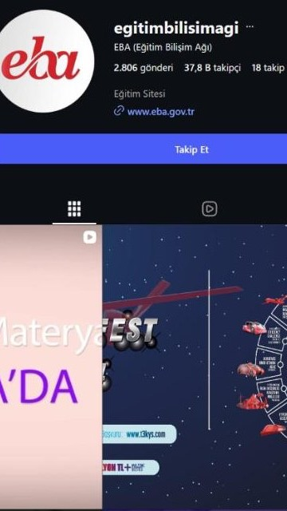
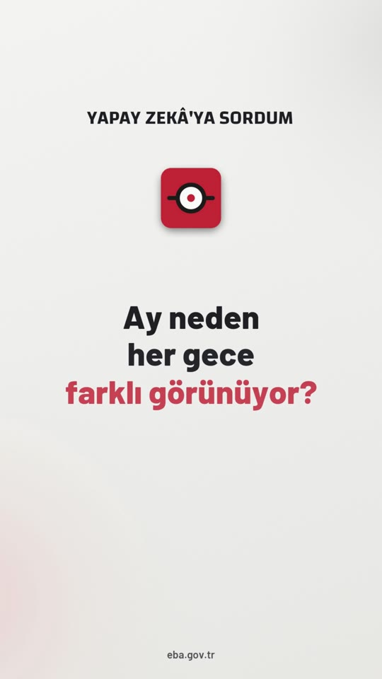
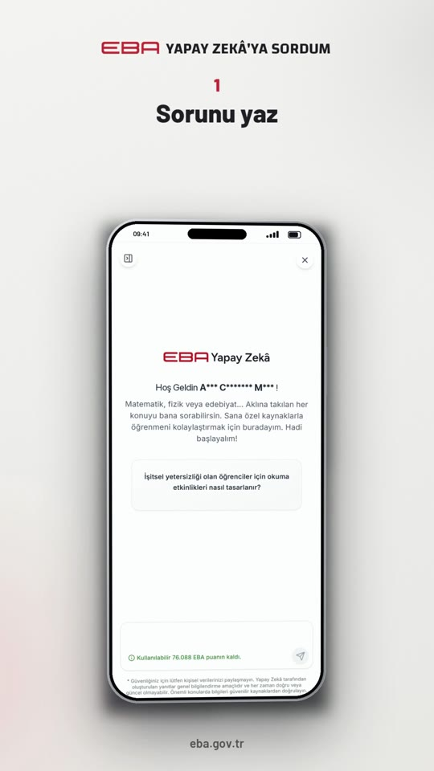
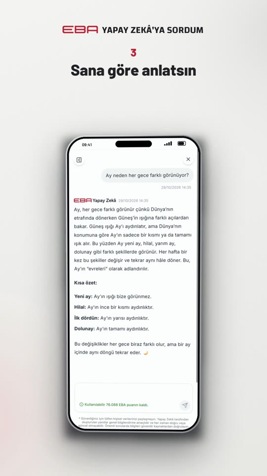
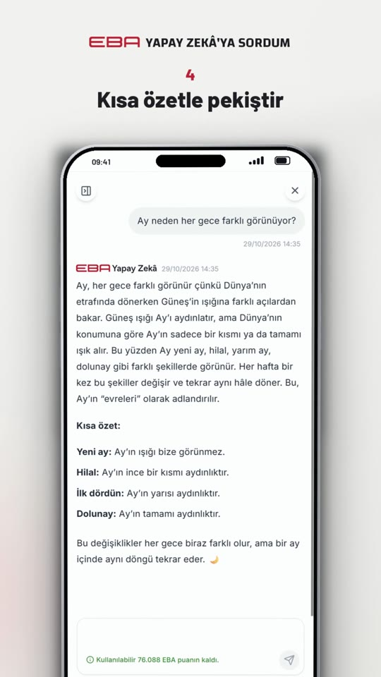
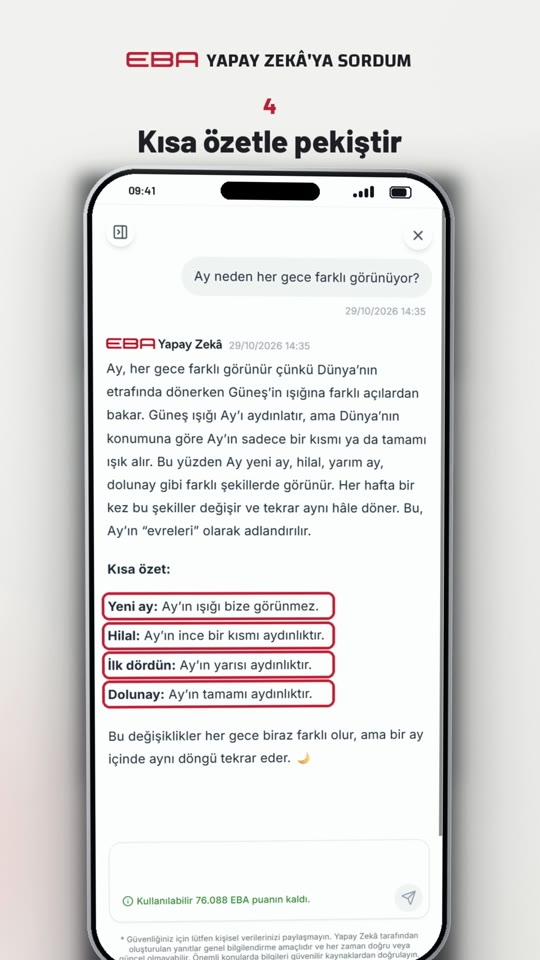
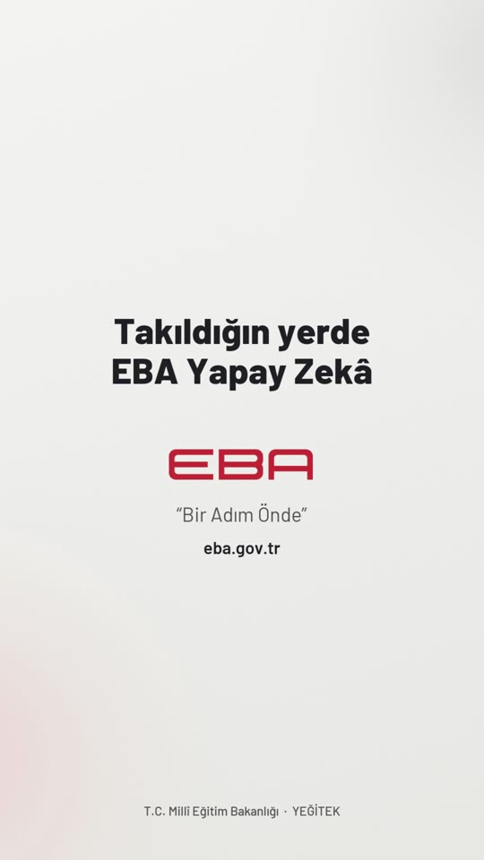

Yeni EBA lansmanı
28 Ekim 2026'da açılan platformda Yapay Zekâ, oyunlar, tiyatro, sanal müzeler ve "Kaldığın Yerden" var. Öğrenciye gösterilecek yenilik bol; hesapta henüz hiçbiri yok.
EBA'nın Instagram hesabını MEB, YEĞİTEK, TRT EBA ve yurt dışındaki benzer platformların hesaplarıyla karşılaştırdık. Kitle duruyor, içerik hazır, lansman geçti. Eksik olan hesabı yeniden açacak karar. Gördüklerimizin özeti ve önümüzdeki 90 günün planı aşağıda.
YEĞİTEK'in 58 binine yakın; sıfırdan başlamaktan çok daha iyi bir zemin.
Son yıllarda büyük kısmı TRT EBA yayın akışı duyurusu.
Son gönderi 1 Mart 2024. Yeni EBA'nın 28 Ekim lansmanı bu hesapta yok.
Profil fotoğrafı eski "eba" logosu. Biyografide yalnızca "Eğitim Sitesi".
Solda EBA'nın bugünkü profili. Yanında bir kurum içi ve bir yurt dışı örnek: MEB ile Endonezya Eğitim Bakanlığı; fotoğraflar çıkarıldı, yalnızca iskelet bırakıldı. Halkalar öne çıkanları, mavi satır bio linkini gösteriyor.

YEĞİTEK 58 bin takipçiyle bu hafta bir Reels'te 226 beğeni aldı. EBA 37,8 binle hiçbir şey paylaşmadı.
Fark kitlede değil, yayında.28 Ekim 2026'da açılan platformda Yapay Zekâ, oyunlar, tiyatro, sanal müzeler ve "Kaldığın Yerden" var. Öğrenciye gösterilecek yenilik bol; hesapta henüz hiçbiri yok.
11 tanıtım Reels'i ve 6 seriden 8 pilot üretildi, iki onay turundan geçti. Kurumsal kimlik (logo, göz ikonu, Barlow/Changa), hitapsız açılış, ad gizleme ve mobil çekim uygulandı. Hesap ilk dört haftayı bu stokla açabilir.
MEB (1 milyon), YEĞİTEK (58 bin) ve TRT EBA (29 bin) düzenli yayında. TRT EBA'nın MEB ile yaptığı ortak gönderi yöntemi EBA için hazır bir büyüme aracı.
Profile giren herkesin bunun Yeni EBA'nın resmî hesabı olduğunu ilk bakışta görmesi.
"Yeni EBA geldi" ile dört haftalık yeniden açılış; haftada en az üç gönderi.
Haftada beş gönderiyle altı serinin düzenli yayını; yorumlardan içerik üretimi.
Solda profilin önerilen hâli: kılavuza uygun ad, biyografi ve öne çıkanlar; üç sabitlenmiş gönderi. Sağda ilk hafta yayımlanacak pilotlardan birinin kapağı.
Her bölüm için bir brif var: neyin, neden gösterileceği ve gönderinin nasıl çıkacağı önceden belli. Seri bir kez onaylanır, her hafta yalnızca soru değişir.






Tiyatro: Şüheda 1915, Cumhuriyete Doğru, En Uzun Gece. Sonra sanal müzeler, bilim merkezleri.
Hücre Köy pilotu oyun içi görüntülerle hazır; her hafta bir oyun.
Bir konunun beş sekmesi: Hazır mıyız?'dan Değerlendirelim'e. 1. sınıf matematik pilotu hazır.
Ana sayfadaki "Kaldığın Yerden Devam Et"; beş kare, veli ve öğrenciye.
Dört kural: doğru adres, şifre, kişisel bilgi, resmî hesap. Duyuru ve doğrulama için.
Onay turunda ertelendi; hesap yorum almaya başlayınca yeniden değerlendirilecek.
Ertelendiİlk hafta içgörü verisiyle mevcut durum ölçülür; hedefler gerçek erişim ve kitle dağılımına göre güncellenir. Her ay sonunda tek sayfalık rapor. Başlangıç değerleri dışarıdan görülen verilerden; YEĞİTEK ve MEB hesaplarının bugünkü düzeyine göre belirlendi.
Yönetimden beklediğimiz:
Kararlar netleştiği gün ilk hafta işleri başlar: hesap erişimi, etiket düzeltmesi, profil yenileme.